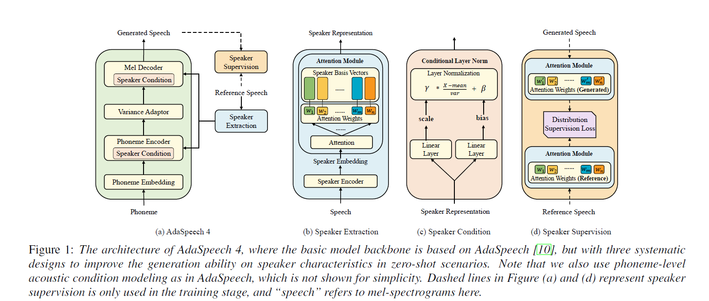
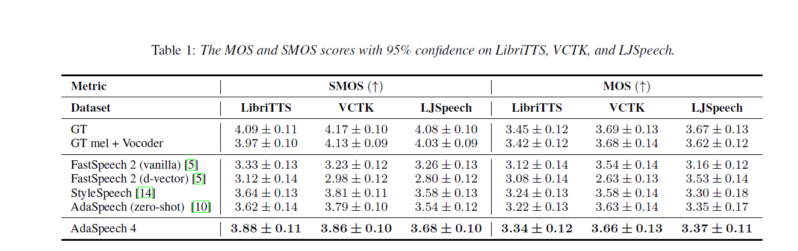
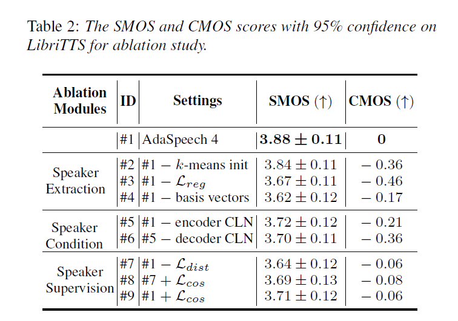
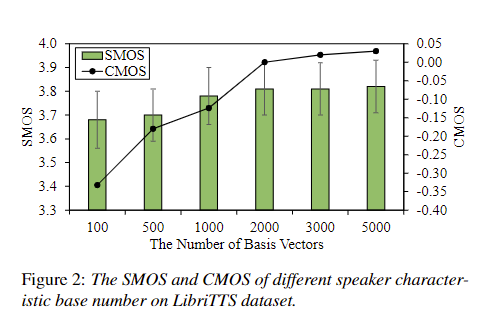

AdaSpeech 4: Adaptive Text to Speech in Zero-Shot Scenarios
Authors
- Yihan Wu (Gaoling School of Artificial Intelligence, Renmin University of China) yihanwu@ruc.edu.cn
- Xu Tan^ (Microsoft Research Asia) xuta@microsoft.com
- Bohan Li (Microsoft Azure Speech) bohli@microsoft.com
- Lei He (Microsoft Azure Speech) helei@microsoft.com
- Sheng Zhao (Microsoft Azure Speech) szhao@microsoft.com
- Ruihua Song^ (Gaoling School of Artificial Intelligence, Renmin University of China) rsong@ruc.edu.cn
- Tao Qin (Microsoft Research Asia) taoqin@microsoft.com
- Tie-Yan Liu (Microsoft Research Asia) tyliu@microsoft.com
^ Corresponding authors.
Abstract
Adaptive text to speech (TTS) can synthesize new voices in zero-shot scenarios efficiently, by using a well-trained source TTS model without adapting it on the speech data of new speakers. Considering seen and unseen speakers have diverse characteristics, zero-shot adaptive TTS requires strong generalization ability on speaker characteristics, which brings modeling challenges. In this paper, we develop AdaSpeech 4, a zero-shot adaptive TTS system for high-quality speech synthesis. We model the speaker characteristics systematically to improve the generalization on new speakers. Generally, the modeling of speaker characteristics can be categorized into three steps: extracting speaker representation, taking this speaker representation as condition, and synthesizing speech/mel-spectrogram given this speaker representation. Accordingly, we improve the modeling in three steps: 1) To extract speaker representation with better generalization, we factorize the speaker characteristics into basis vectors and extract speaker representation by weighted combining of these basis vectors through attention. 2) We leverage conditional layer normalization to integrate the extracted speaker representation to TTS model. 3) We propose a novel supervision loss based on the distribution of basis vectors to maintain the corresponding speaker characteristics in generated mel-spectrograms. Without any fine-tuning, AdaSpeech 4 achieves better voice quality and similarity than baselines in multiple datasets.
Model Architecture
Contents
1. Audio Samples1.1 Audio Samples Synthesized in Zero-Shot Scenarios
1.2 Baseline Comparison
2. Ablation Studies
2.1 The Effectiveness of Each Component
2.2 The Number of basis vectors Analysis
1. Audio Samples
In zero-shot scenarios, we randomly select one audio from each speaker as reference.
1.1 Audio Samples Synthesized in Zero-Shot Scenarios
Sample 1 : Three weeks had passed since the murder at Mr. Weishaupt's--three weeks the most agitated that had been known in this sequestered city.
| GT mel + HiFiGAN | AdaSpeech 4 |
|---|---|
Sample 2 :That argument certainly weighed much in his favor.
| GT mel + HiFiGAN | AdaSpeech 4 |
|---|---|
Sample 3 : But so definite had she been in expressing her wishes, that the girls felt that it was due her for lending her house to pay all deference to what she said.
| GT mel + HiFiGAN | AdaSpeech 4 |
|---|---|
Sample 4 : He entered it.
| GT mel + HiFiGAN | AdaSpeech 4 |
|---|---|
Sample 5 : But it was pleasant to hear her thus answer.
| GT mel + HiFiGAN | AdaSpeech 4 |
|---|---|
Sample 6 : "Give it to me," said the king; and he took the paper.
| GT mel + HiFiGAN | AdaSpeech 4 |
|---|---|
Sample 7 :Carpets everywhere.
| GT mel + HiFiGAN | AdaSpeech 4 |
|---|---|
Sample 8 : Oh, Ethel, do try to forgive me!
| GT mel + HiFiGAN | AdaSpeech 4 |
|---|---|
Sample 9 : Several times after I repeated the same manoeuvre, but with as little success as before. As my pretence for withdrawing from the house was to allay my thirst, Kory-Kory either suspecting some design on my part, or else prompted by a desire to please me, regularly every evening placed a calabash of water by my side.
| GT mel + HiFiGAN | AdaSpeech 4 |
|---|---|
Sample 10 : Yet I cannot describe the curiosities to you.
| GT mel + HiFiGAN | AdaSpeech 4 |
|---|---|
1.2 Baseline Comparison
Speaker 1 (Male) : Then I went and I put my legs in place of his legs, and my hands in place of his forelegs, and my head in place of his head, and the horns on top of my head, so that the brute might think that it was the buck.
| GT mel + HiFiGAN | FastSpeech (d-vector) | AdaSpeech | AdaSpeech 4 |
|---|---|---|---|
Speaker 2 (Male) : General Cheatham came up and advanced.
| GT mel + HiFiGAN | FastSpeech (d-vector) | AdaSpeech | AdaSpeech 4 |
|---|---|---|---|
Speaker 3 (Female) : I suppose you did know?
| GT mel + HiFiGAN | FastSpeech (d-vector) | AdaSpeech | AdaSpeech 4 |
|---|---|---|---|
Speaker 4 (Female) : I'm not anxious about myself, but about you," Annesley said.
| GT mel + HiFiGAN | FastSpeech (d-vector) | AdaSpeech | AdaSpeech 4 |
|---|---|---|---|
Ablation Studies
2.1 The Effectiveness of Each Component
In this section, we conduct ablation studies to verify the effectiveness of each component in AdaSpeech 4. As shown in Table 2, We observe that remove each components will lead the decrease of the voice quality. Transcript: "I'm not anxious about myself, but about you," Annesley said.
| GT mel + HiFiGAN | #1: AdaSpeech 4 | #2: #1 - k-means initialization | #3: #1 - Lreg |
|---|---|---|
| #4: #1 - basis vectors | #5: #1 - encoder CLN | #6: #5 - decoder CLN |
| #7: #1 - Ldist | #8: #7 + Lcos | #9: #1 + Lcos |
2.2 The Number of basis vectors Analysis
As the number of basis vectors determines the variety of speaker features, we further investigate the speech synthesized in zero-shot scenarios. changes with different number of basis vectors on LibriTTS test set. As shown in Figure 2, the voice quality and similarity continuously drops when the number of basis vectors decreases from 2000, while there is no obvious gain when the number of basis vectors is greater than 2000. Thus, we choose 2000 in our experiments. | GT mel + HiFiGAN | The number of basis vectors | Audio samples |
|---|---|
| 100 | |
| 1000 | |
| 2000 (AdaSpeech 4) | |
| 5000 |
Our Related Works
AdaSpeech: Adaptive Text to Speech for Custom Voice
AdaSpeech 2: Adaptive Text to Speech with Untranscribed Data
AdaSpeech 3: Adaptive Text to Speech for Spontaneous Style
FastSpeech: Fast, Robust and Controllable Text to Speech
FastSpeech 2: Fast and High-Quality End-to-End Text to Speech
MultiSpeech: Multi-Speaker Text to Speech with Transformer
LRSpeech: Extremely Low-Resource Speech Synthesis and Recognition